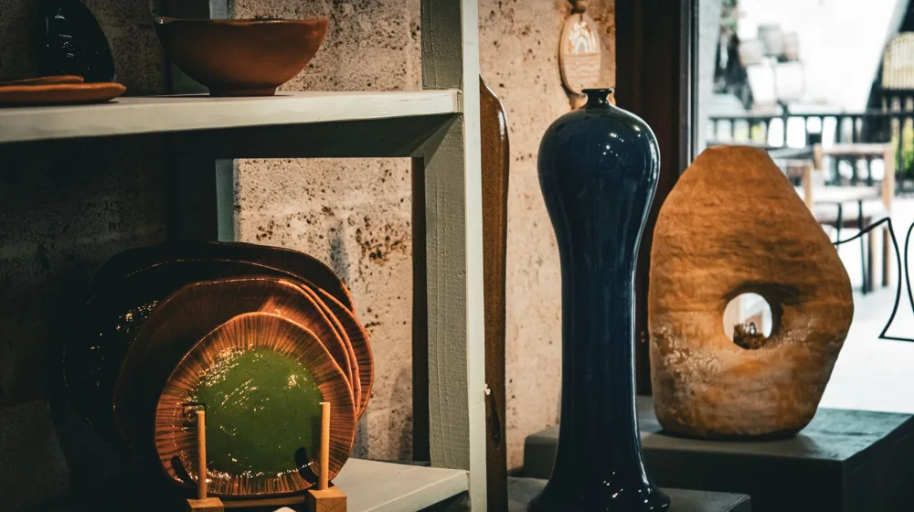

전통 공예품, 우리 집 인테리어에 '힙'하게 들이는 5가지 방법
사진: Kate Weirick / Pexels (무료 이미지, 출처 표기)
전통 공예품, 우리 집 인테리어에 '힙'하게 들이는 5가지 방법

전통 공예품을 현대적인 공간에 어떻게 조화롭게 녹여낼지 고민이신가요? 고유의 멋과 이야기가 담긴 공예품이 세련된 인테리어 포인트가 될 수 있도록, 지금부터 전문가의 실용적인 체크리스트를 안내해 드립니다. 전통의 가치를 존중하면서도 모던하고 '힙'한 감각을 더하는 방법을 함께 알아보세요.
전통 공예품, 왜 현대 인테리어에 주목할까요?
전통 공예품은 단순한 장식을 넘어 공간에 깊이와 스토리를 담아냅니다. 공장에서 대량 생산된 제품이 아닌, 장인의 손길로 완성된 유일무이한 가치를 지니기 때문입니다.
빠르게 변하는 트렌드 속에서도 변치 않는 고유한 아름다움은 공간에 안정감과 특별함을 부여합니다. 또한 지속 가능한 소비 트렌드와 맞물려 환경 보호 및 지역 장인 지원이라는 긍정적인 의미까지 내포하고 있습니다.
우리 집에 어울리는 공예품 선택, 이것부터 체크하세요
- 용도와 기능성: 공예품을 순수한 장식용으로 둘 것인지, 아니면 화병, 수납함, 조명처럼 실용적인 용도로 사용할 것인지 먼저 결정합니다.
- 소재와 질감: 도자, 나무, 금속, 직물 등 소재에 따라 공간에 다른 분위기를 연출합니다. 현재 인테리어의 다른 요소들과의 조화를 고려하세요. 예를 들어, 따뜻한 원목 가구가 많다면 도자기나 한지 공예품이 잘 어울립니다.
- 색상과 패턴: 공간의 전체적인 톤앤매너와 어울리는 색상과 패턴을 선택해야 합니다. 너무 강렬한 대비보다는 은은하게 조화되는 것을 추천합니다.
- 크기와 비례: 공예품이 놓일 공간의 크기와 주변 가구와의 비례를 고려합니다. 너무 크거나 작으면 오히려 어색해 보이거나 존재감이 미미해질 수 있습니다.
전통 공예품, 공간별 스타일링 가이드
성공적인 매치를 위한 3가지 황금률
전통 공예품을 현대 인테리어에 효과적으로 활용하려면 몇 가지 원칙을 지키는 것이 좋습니다.
- 미니멀리즘 유지: 여러 공예품을 한 번에 배치하기보다, 엄선된 한두 개의 작품에 집중하여 고유의 아름다움이 돋보이도록 합니다. 과유불급(過猶不及)을 기억하고 여백의 미를 살리세요.
- 컬러 팔레트 통일: 현대적인 공간의 컬러와 공예품의 색감이 조화를 이루도록 합니다. 차분한 무채색 계열의 공간에는 색감이 있는 공예품으로 생기를 더하고, 따뜻한 톤의 공간에는 나무나 흙 계열의 공예품이 자연스럽게 어울립니다.
- 현대적인 요소와 믹스매치: 전통 공예품을 완전히 분리된 요소가 아닌, 현대적인 가구나 소품과 자연스럽게 어우러지도록 배치합니다. 예를 들어, 미니멀한 콘솔 위에 백자 화병을 두거나, 스틸 소재의 테이블에 작은 나전 명함함을 올려두는 식입니다.
전통 공예품 구매 시 꼭 확인해야 할 점
값비싼 공예품을 구매하기 전에는 몇 가지 주의사항을 확인하는 것이 현명합니다.
장인의 숙련도와 작품성: 단순한 기념품이 아닌, 오랜 시간 기술을 연마한 장인의 작품을 선택하는 것이 중요합니다. 한국공예·디자인문화진흥원(KCDF) 등 전통 공예 진흥을 위해 설립된 공식 기관의 인증 여부를 확인하는 것도 좋은 방법입니다.
보관 및 관리법: 각 공예품의 소재 특성에 따른 보관 및 관리법을 미리 숙지해야 합니다. 예를 들어, 나전칠기는 습기에 약하고, 유기는 변색될 수 있습니다. 구매 전 판매처에 문의하여 정확한 정보를 얻는 것이 필수입니다.
정품 여부와 가격: 유사품이나 저품질 제품에 주의하고, 합리적인 가격인지 여러 곳을 비교해봅니다. 온라인 구매 시에는 판매자 평점과 후기를 꼼꼼히 확인하고, 가능하다면 오프라인 매장에서 직접 작품을 보고 구매하는 것을 추천합니다.
전통 공예품은 단순한 장식을 넘어 공간에 깊이와 품격을 더하는 특별한 요소입니다. 2026년 8월 기준으로 제시된 이 체크리스트를 바탕으로, 우리 집 인테리어에 전통의 아름다움을 현대적인 감각으로 재해석하여 나만의 유니크한 공간을 만들어 보시길 바랍니다. 정확한 구매 정보나 전시회 일정은 한국공예·디자인문화진흥원(KCDF) 등 관련 공식 기관 웹사이트에서 다시 한번 확인하는 것을 권장합니다.
🔗 이 글도 함께 보면 좋아요: 실손보험 갱신 전 놓치면 후회할 5가지 핵심 체크리스트
관련 추천 상품
나전칠기, 도자기 화병, 수공예 인테리어 소품 관련 인기 상품 보러가기
이 포스팅은 쿠팡 파트너스 활동의 일환으로, 이에 따른 일정액의 수수료를 제공받습니다.